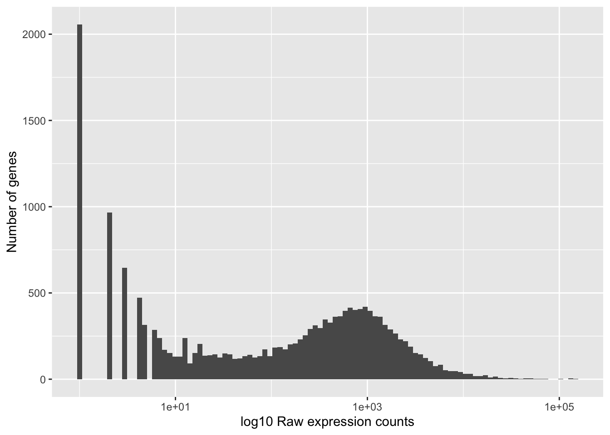
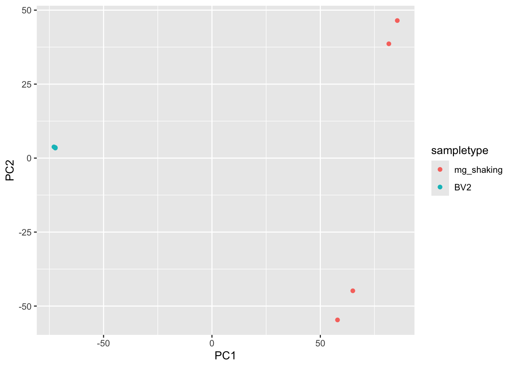
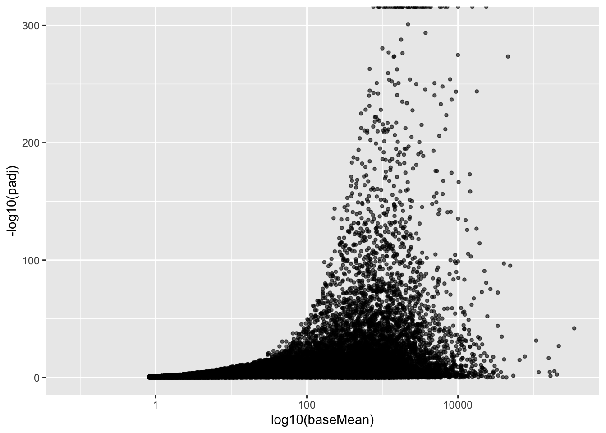

Welcome to Bioconductor
Vignettes contain introductory material; view with
'browseVignettes()'. To cite Bioconductor, see
'citation("Biobase")', and for packages 'citation("pkgname")'.
Attaching package: 'Biobase'
The following object is masked from 'package:MatrixGenerics':
rowMedians
The following objects are masked from 'package:matrixStats':
anyMissing, rowMedians
library(tidyverse)
Warning: package 'ggplot2' was built under R version 4.4.3
Warning: package 'tidyr' was built under R version 4.4.3
Warning: package 'readr' was built under R version 4.4.3
## List all directories containing data samples <-list.files(path ="./data", full.names = T, pattern="quant")## Obtain a vector of all filenames including the pathfiles <-file.path(samples, "quant.sf")## Since all quant files have the same name it is useful to have names for each elementnames(files) <-str_replace(samples, "./data/", "") %>%str_replace(".salmon", "")
# Load the annotation table for GrCh38tx2gene <-read.delim("intermediate/mouse_annotations.tsv", header =TRUE)head(tx2gene)
# import a single quant file to check the columnssalmon_example <-read_tsv(files[1])
Rows: 147955 Columns: 5
── Column specification ────────────────────────────────────────────────────────
Delimiter: "\t"
chr (1): Name
dbl (4): Length, EffectiveLength, TPM, NumReads
ℹ Use `spec()` to retrieve the full column specification for this data.
ℹ Specify the column types or set `show_col_types = FALSE` to quiet this message.
# plot histogram of raw counts for BV2_1 sampleggplot(count_data) +geom_histogram(aes(x = BV2_1_quant), stat ="bin", bins =200) +xlab("Raw expression counts") +ylab("Number of genes")
# transform the x axis to log scaleggplot(count_data) +geom_histogram(aes(x = BV2_1_quant), stat ="bin", bins =100) +scale_x_log10() +# log scale for better visualizationlabs(x ="log10 Raw expression counts",y ="Number of genes")
Warning in scale_x_log10(): log-10 transformation introduced infinite values.
Warning: Removed 37969 rows containing non-finite outside the scale range
(`stat_bin()`).

# melt the count_data for all sampleslibrary(reshape2)
Attaching package: 'reshape2'
The following object is masked from 'package:tidyr':
smiths
# density plot of all samplesggplot(count_data_melted, aes(x = value, color = variable)) +geom_density() +scale_x_log10() +# log scale for better visualizationlabs(x ="log10 Raw expression counts",y ="Density")
Warning in scale_x_log10(): log-10 transformation introduced infinite values.
Warning: Removed 295170 rows containing non-finite outside the scale range
(`stat_density()`).
mean_bv2_counts <-apply(count_data[,1:4], 1, mean) #The second argument '1' of 'apply' function indicates the function being applied to rows. Use '2' if applied to columns variance_bv2_counts <-apply(count_data[,1:4], 1, var)df <-data.frame(mean_bv2_counts, variance_bv2_counts)ggplot(df) +geom_point(aes(x=mean_bv2_counts, y=variance_bv2_counts)) +scale_y_log10(limits =c(1,1e9)) +scale_x_log10(limits =c(1,1e9)) +geom_abline(intercept =0, slope =1, color="red")
# to get BV2 (numerator) vs mg_shaking (denominator), relevel factor so mg_shaking is the referencemeta <- meta |>mutate(sampletype =relevel(factor(sampletype), ref ="mg_shaking"))meta
### Transform counts for data visualizationdds_vst <-vst(dds, blind=TRUE)dds_mat <-assay(dds_vst)pca <-prcomp(t(dds_mat))# Create data frame with metadata and PC values for input to ggplotdf <-cbind(meta, pca$x)ggplot(df) +geom_point(aes(x=PC1, y=PC2, color = sampletype))

### Compute pairwise correlation valuesdds_cor <-cor(dds_mat) ## cor() is a base R function## check the output of cor(), make note of the row names and column nameshead(dds_cor)
log2 fold change (MLE): sampletype BV2 vs mg_shaking
Wald test p-value: sampletype BV2 vs mg shaking
DataFrame with 6 rows and 6 columns
baseMean log2FoldChange lfcSE stat pvalue
<numeric> <numeric> <numeric> <numeric> <numeric>
ENSMUSG00000000001 3505.43759 0.218885 0.0507842 4.31010 1.63179e-05
ENSMUSG00000000003 0.00000 NA NA NA NA
ENSMUSG00000000028 531.57715 4.282828 0.1797869 23.82170 1.99041e-125
ENSMUSG00000000031 92.74252 -10.431263 1.3104259 -7.96021 1.71749e-15
ENSMUSG00000000037 4.03250 -5.204346 1.8593643 -2.79899 5.12624e-03
ENSMUSG00000000049 1.41056 -4.425888 3.4257586 -1.29194 1.96377e-01
padj
<numeric>
ENSMUSG00000000001 3.84422e-05
ENSMUSG00000000003 NA
ENSMUSG00000000028 1.30858e-123
ENSMUSG00000000031 8.92997e-15
ENSMUSG00000000037 9.12833e-03
ENSMUSG00000000049 2.54893e-01
# Get information on each column in resultsmcols(res_table, use.names=T)
DataFrame with 6 rows and 2 columns
type description
<character> <character>
baseMean intermediate mean of normalized c..
log2FoldChange results log2 fold change (ML..
lfcSE results standard error: samp..
stat results Wald statistic: samp..
pvalue results Wald test p-value: s..
padj results BH adjusted p-values
# see how many genes have zero expressionres_table[which(res_table$baseMean ==0),] %>%nrow()
[1] 28997
# see how many genes have an extreme outlierres_table[which(is.na(res_table$pvalue) &is.na(res_table$padj) & res_table$baseMean >0),] %>%nrow()
[1] 17
# plot log10(baseMean) vs -log10(padj) with ggplot2ggplot(res_table, aes(x = baseMean, y =-log10(padj))) +geom_point(alpha =0.6, size =1) +scale_x_log10() +labs(x ="log10(baseMean)",y ="-log10(padj)" )
Warning in scale_x_log10(): log-10 transformation introduced infinite values.
Warning: Removed 35824 rows containing missing values or values outside the scale range
(`geom_point()`).

# see how many genes are below the low mean thresholdres_table[which(!is.na(res_table$pvalue) &is.na(res_table$padj) & res_table$baseMean >0),] %>%nrow()
[1] 6810
# summary of resultssummary(res_table)
out of 26616 with nonzero total read count
adjusted p-value < 0.05
LFC > 0 (up) : 5117, 19%
LFC < 0 (down) : 7495, 28%
outliers [1] : 17, 0.064%
low counts [2] : 6810, 26%
(mean count < 1)
[1] see 'cooksCutoff' argument of ?results
[2] see 'independentFiltering' argument of ?results
## Save the unshrunken results to compareres_table_unshrunken <- res_table
# get coefficient name from all column namesresultsNames(dds)
using 'apeglm' for LFC shrinkage. If used in published research, please cite:
Zhu, A., Ibrahim, J.G., Love, M.I. (2018) Heavy-tailed prior distributions for
sequence count data: removing the noise and preserving large differences.
Bioinformatics. https://doi.org/10.1093/bioinformatics/bty895
Warning in nbinomGLM(x = x, Y = YNZ, size = size, weights = weightsNZ, offset =
offsetNZ, : the line search routine failed, possibly due to insufficient
numeric precision
head(res_table_shrunken)
log2 fold change (MAP): sampletype BV2 vs mg shaking
Wald test p-value: sampletype BV2 vs mg shaking
DataFrame with 6 rows and 5 columns
baseMean log2FoldChange lfcSE pvalue
<numeric> <numeric> <numeric> <numeric>
ENSMUSG00000000001 3505.43759 0.218429 0.0507373 1.63179e-05
ENSMUSG00000000003 0.00000 NA NA NA
ENSMUSG00000000028 531.57715 4.269006 0.1817984 1.99041e-125
ENSMUSG00000000031 92.74252 -11.956724 3.2848385 1.71749e-15
ENSMUSG00000000037 4.03250 -3.636091 2.5503390 5.12624e-03
ENSMUSG00000000049 1.41056 -0.282037 1.0735655 1.96377e-01
padj
<numeric>
ENSMUSG00000000001 3.84422e-05
ENSMUSG00000000003 NA
ENSMUSG00000000028 1.30858e-123
ENSMUSG00000000031 8.92997e-15
ENSMUSG00000000037 9.12833e-03
ENSMUSG00000000049 2.54893e-01
### Set thresholdspadj.cutoff <-0.05# Subset the tibble to keep only significant genessig_tb <- res_table_shrunken_tb %>% dplyr::filter(padj < padj.cutoff)# Take a quick look at this tibblehead(sig_tb)